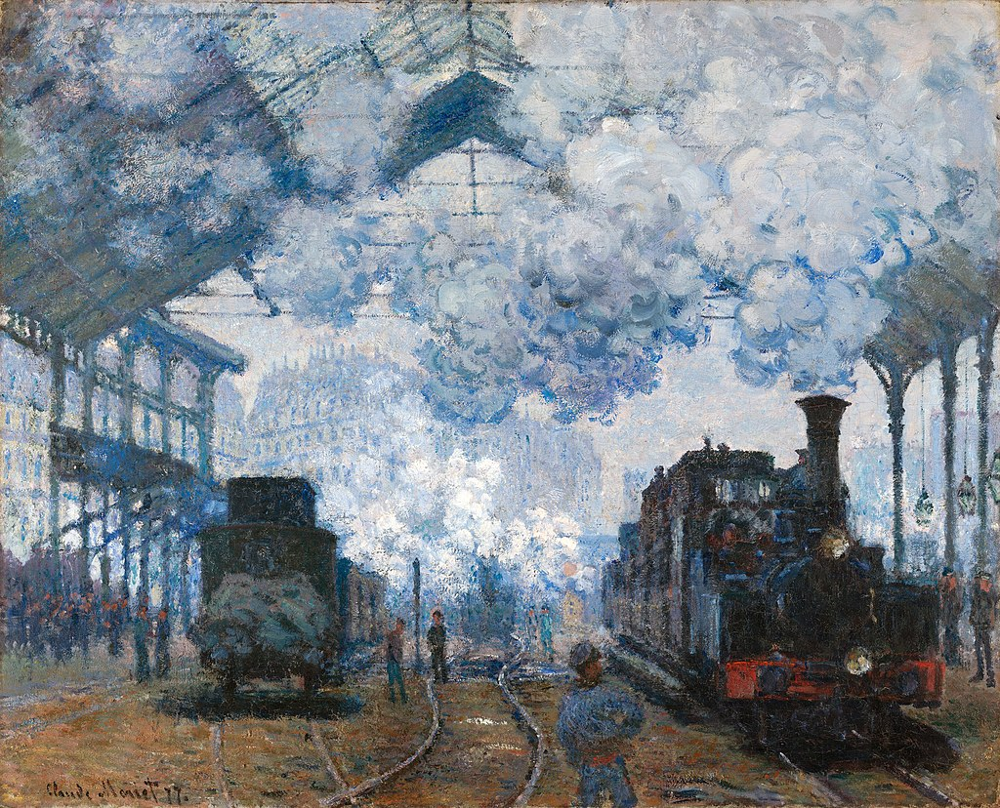

<head>
<meta charset="UTF-8" />
<meta name="keywords" content="drawing, painting" />
<meta name="description" content="drawings by Sunjy" />
<title>Sunjy</title>
<link rel="shortcut icon" type="image/x-icon" href="../../mImages/mCommon/favicon.ico" media="screen" />
<link rel="stylesheet" type="text/css" href="../../mCsses/mCommon/mCssA.css" />
<link rel="stylesheet" type="text/css" href="../../mCsses/mCommon/mCssB.css" />
<link rel="stylesheet" type="text/css" href="../../mCsses/mCommon/mCssC.css" />
<link rel="stylesheet" type="text/css" href="../../mCsses/mCommon/mCssD.css" />
<link rel="stylesheet" type="text/css" href="../../mCsses/mContent/mCssA.css" />
<link rel="stylesheet" type="text/css" href="../../mCsses/mContent/mCssB.css" />
<link rel="stylesheet" type="text/css" href="../../mCsses/mContent/mCssC.css" />
<link rel="stylesheet" type="text/css" href="../../mCsses/mContent/mCssD.css" />
</head>
<script type="text/javascript" src="../../mScripts/mContent/mContentAA.js" /></script>
<script type="text/javascript" src="../../mScripts/mContent/mContentAB.js" /></script>
<script type="text/javascript" src="../../mScripts/mContent/mContentAC.js" /></script>
<script type="text/javascript" src="../../mScripts/mContent/mContentAD.js" /></script>
<script type="text/javascript"></script> 
<script type="text/javascript">
document.write('<div class="mImgAbsolute"></div>');
/*
document.write('<p class="mFontSizeBColor" />From a white paper...</p>');
document.write('<table class="center"><tr><td>');
document.write('');
document.write('</td></tr></table>');
*/
</script>


<script type="text/javascript">
document.write('<p class="mFontSizeBColor" />The Gare Saint-Lazare: Arrival of a Train</p>');
document.write('<p class="mFontSizeSColor" />“The Gare Saint-Lazare: Arrival of a Train” by Claude Monet is the largest in Monet’s series of the Saint-Lazare train station in Paris.<br><br>While completing the series, Monet worked on all the paintings at the same time, and sometimes he leaned the canvases against each other while the paint was still wet.<br><br>This practice caused the cork on the backs of the canvases to be pressed into the paintings behind. The circular indentations in the top two edge of this work’s surface.<br><br>Monet’s thick build-up of pigments in this painting is an example of his style in juxtaposing hues in mounds of impasto that would blend when viewed from a distance. This technique led Cézanne to declare:<br><br>“Monet is only an eye, but my God, what an eye!”<br></p>');
document.write('<table class="center" /><tr><td>');
document.write('<br>While completing the series, Monet worked on all the paintings at the same time, and sometimes he leaned the canvases against each other while the paint was still wet.<br><br>This practice caused the cork on the backs of the canvases to be pressed into the paintings behind. The circular indentations in the top two edge of this work’s surface.<br><br>Monet’s thick build-up of pigments in this painting is an example of his style in juxtaposing hues in mounds of impasto that would blend when viewed from a distance. This technique led Cézanne to declare:<br><br>“Monet is only an eye, but my God, what an eye!”<br>" />');
document.write('</td></tr></table>');
</script>


